Introduction
みなさんはテーブルゲームやカードゲームは好きですか？
私は今までの人生の中で様々なゲームをプレーしてきました。ビデオゲーム、音ゲー、FPS、育成ゲー、RPG...
どれも得意ではなく、よく挫折したり、諦めたり、上手くできなかったりでゲームはあまり向いてないない人間だと思っていました。
ですが、こんな私でも初めて楽しめるゲームを見つけてしまいました。
それが、テーブルやカードゲーム!!!
そこから、どんどんはまっていき最終的にはポーカー、ブラックジャック、麻雀などを楽しむようになってました(￣▽￣;)
(誤解を生まないでいただきたいのは、あくまでも楽しむだけであり、賭博はしてません!)
そんな数ある中のテーブル/カードゲームの中でも、個人的に一番面白いと思っているポーカーの遊び方について初心者さん向けに紹介できたらいいなと思い、このサイトを作りました。
ぜひ楽しんで見ていってください(○´∀｀○)ﾉ
About poker
一般的なポーカー(ドローポーカー)は、自分の持っている手札5枚の強さを競うゲームです。
自分の手札(ハンド)で役をつくり一番強い役を持っている人、または他のプレイヤーをゲームから下ろさせれば(フォールドさせる)勝利するゲームです。
そのため、ポーカーは頭脳戦でもあり心理戦でもある非常に奥の深いゲームです。
Rule 1
今回紹介するのはカジノでもよく遊ばれているポーカーの一種、テキサスホールデムの主な流れとルールについて紹介したいと思います。
【おまけ】こちらはRule1とRule2を覚えてから見ることをおすすめします！
Rule 2
ここからは、ポーカーの役の強さ(ハンド)とカードの強さ(ランク)について紹介しようと思います。
ポーカーは役の強さとカードの強さで勝敗を決めます。
優先順位は:役の強さ→カードの強さなので、役のつよさ＞カードの強さと覚えておきましょう。
カードの強さ(ランク)

ポーカーのカードの強さの順番は大富豪と似ていますが、ポーカーの場合"2"が一番弱いです。
ジョーカーの役は大富豪と同じで、オールマイティーな役をします。なので、好きなカードの代わりになれるチート的な存在です。
カードの役の強さ(ハンド)
ロイヤルストレートフラッシュ/ロイヤルストレート
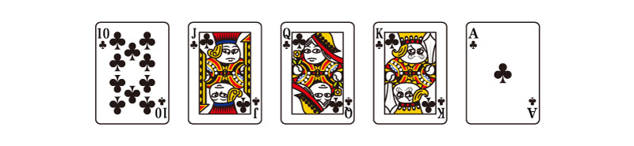ポーカーで一番強いハンドであり、一番強いランクです。これが出る確率は0.00323%なのでほぼ不可能に近い役です。
私もポーカーをプレーしていて見たことは一回もありませんｗ
ストレートスフラッシュ
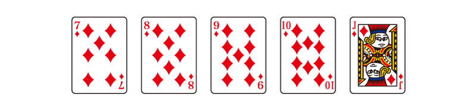ストレートフラッシュは、ロイヤルストレートフラッシュ以外で数字が連番かつトランプのマークがそろっている手札です。確率敵には0.0279％です。
こちらはロイヤルストレートフラッシュよりも出る確率は高いですが、低いので揃えられる手札ではありません。
フォー/フォーオブカインド/フォーカード
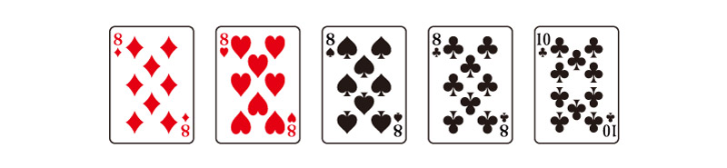同じ数字のカードが4つ揃う手札です。科率は0.168%ですが、実際は揃えやすい役です。
テキサスホールデムの場合、真ん中にカードを開示していく際(フリフロップ))に手元のカードとテーブル状のカードでどんなに最弱のランクのカードでもツーペア→スリーペア→フルハウス→フォーと狙っていけるので、比較的に強気で勝負できます。
フルハウス
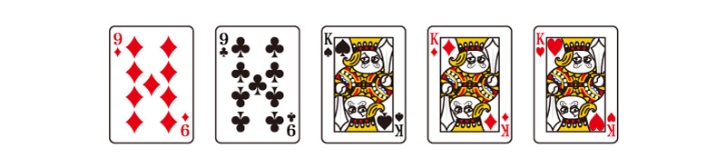同じ数字のカードが5枚の手札のうち、2枚1組と3枚1組できる組み合わせです。確率は2.60%ですが、こちらも実際の確率よりかはかなり出やすい役です。
こちらもフォー同様でツーペア→スリーペア→フルハウス→フォーと狙っていけるチャンスがあります。
フラッシュ
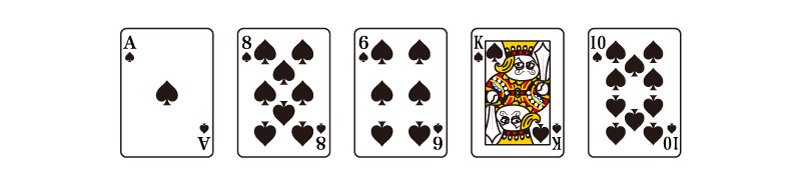出る確率は3.03%とフォーやフルハウスよりかは高めですが、フリフロップやスーテッド(最初の持ち札2枚)の時点でマークが揃っているということが少ないので、最初から狙っていける確率が低いハンドとなってます。
稀に、序盤の方でフォールド(ゲームを下りること)してしまい、後々フラッシュだったというケースもあるので、ハイリスクハイリターンで運も味方につけないと作れないハンドでもあります。
ストレート
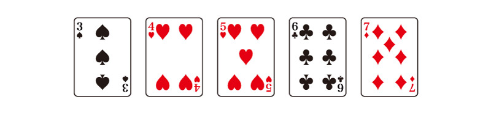フラッシュが出る確率は4.62%ですが、ハイカードにもなりやすいハンドです。フラッシュ同様、度胸が試されるカードでもあり、思ったよりも出ない役です。
スリー/スリーオブカインズ/スリーカード
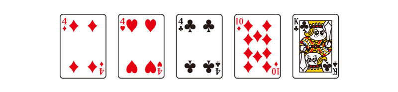スリーカードのみ出る確率は、4.83%です。こちらもストレート同様、実際にプレーしてみると意外とです。
ツーペア
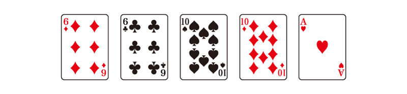ツーペアーは揃えやすいハンドです。ツーペアのみ出る確率は23.50%です。
今まで出てきたハンドよりも揃えやすい分、カードの強さも考慮しないといけない役です。
ワンペア
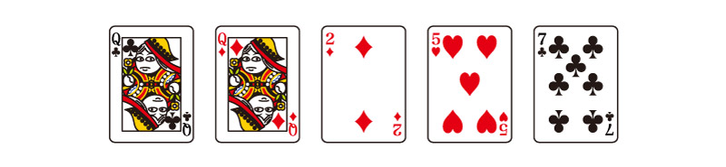ワンペアは一番揃えやすい役ではありますが、なんのワンペアなのかが重要になってきます。確率は43.82%です。
例えば、Aのワンペアなら強いですが、2のワンペアならほぼ勝ち目はないと言ってもいいでしょう。
ハイカード
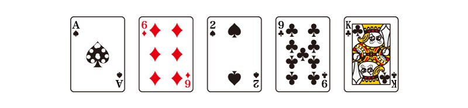一番弱いハンドです。出る確率は、17.41%です。ハイカードで勝った時は運かブラフです。
個人的には、ハイカードでもコインに余裕がある時は、レイズして他のプレイヤーにプレッシャーをかけて勝ちに行くパターンも稀にやります...。(ハイリスクハイリターンですが）
カードの役の確立のまとめ
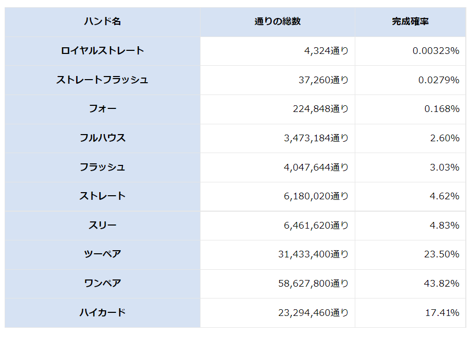Summary
ポーカーはハンドを覚えるまでは大変ですが、基本的なルールを覚えてしまえば意外と簡単なゲームです。
最初は負けることが多いかもしれませんが、練習すれば流れやコツがつかめてくるようになります。
そこで、私が初心者におすすめしている練習法がスマホの無料ゲームです(^_^)
SunVy Pokerは片手でも操作しやすいように、縦画面で遊べます。
ポーカーの他にもブラックジャックなどのカジノゲームもあるので、是非遊んでみてください(*‘∀‘)
最後にアンケートのご協力をお願いします！
アンケートへ